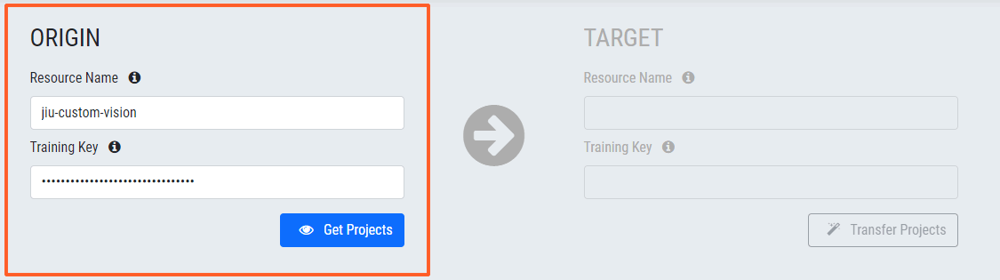
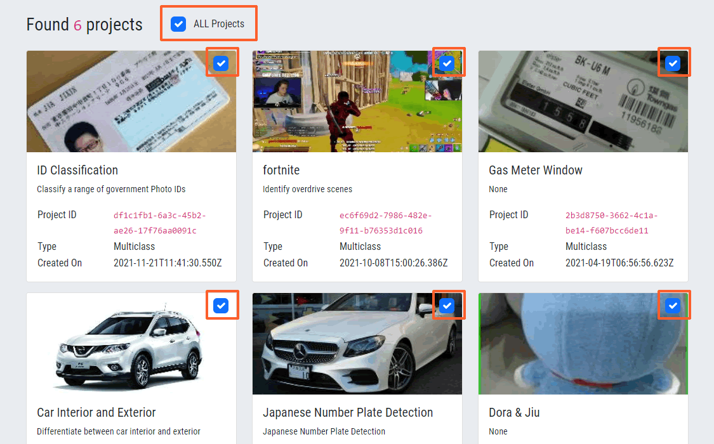
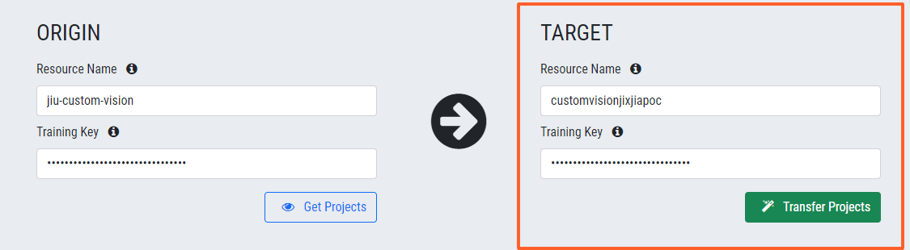
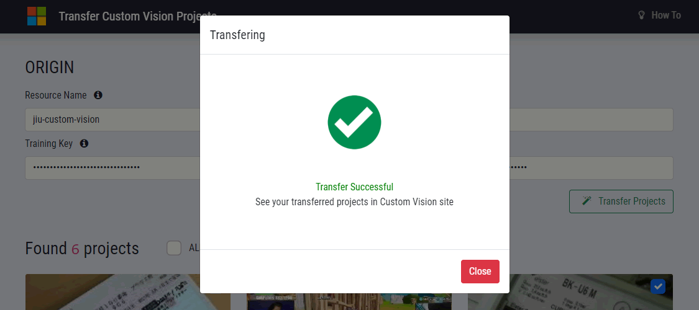

3 steps to copy your Custom Vision projects between Azure subscriptions
Step 1 - Origin details
Enter the source Custom Vision resource name and training key

Step 2 - Select projects
Pikc the desired projects to copy across

Step 3 - Target details
Enter the destination Custom Vision resource name and training key

That's it !
If everything entered correctly you should see transfer completes after a few while
